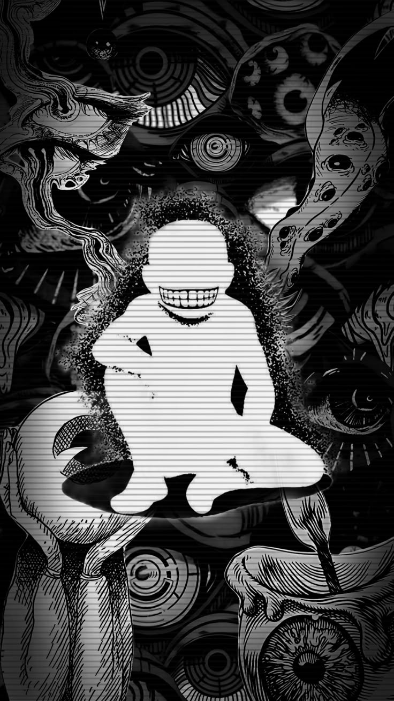
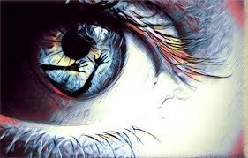
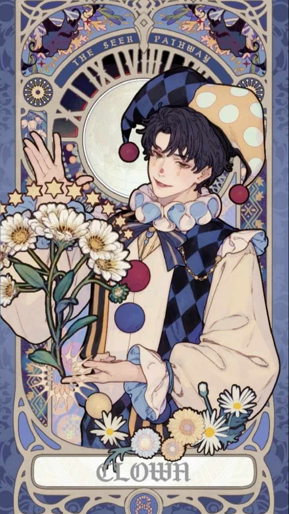

Visualizations related to psychology and mental well-being.

“Portals of wisdom shaping inner worlds.”
Symbolizes
Knowledge externalized, feeding imagination, memory, and evolving human consciousness.Credit: Getty Images

“Silence becomes the mirror of mind.”
Symbolizes
Awareness observes itself, dissolving ego boundaries and awakening inner clarity.

“The watcher behind life’s unfolding stage.”
Symbolizes
Detached perception reveals truth beyond emotion, guiding objective understanding.
“Waves of shared consciousness interweaving humanity.”
Symbolizes
Collective psyche unites individuals through archetypal patterns of understanding.

“Infinite mirror reflecting human soul essence.”
Symbolizes
The total self—mind, emotion, and spirit—seeking integration and wholeness.
“Vision pierces illusion, revealing hidden truths.”
Symbolizes
Intuition transcends senses, perceiving archetypal patterns shaping destiny.
“Mind explorer decoding unseen human patterns.”
Symbolizes
Seeks meaning in behavior, bridging logic, empathy, and unconscious motive.
“Night’s theater where soul speaks freely.”
Symbolizes
Subconscious symbols communicate inner conflicts, desires, and hidden truths.Credit: https://www.shutterstock.com/g/
nivens
“Sees tomorrow through the soul’s imagination.”
Symbolizes
Creative foresight turns abstract ideals into transformative collective progress.

“Innocent wanderer embracing wisdom through risk.”